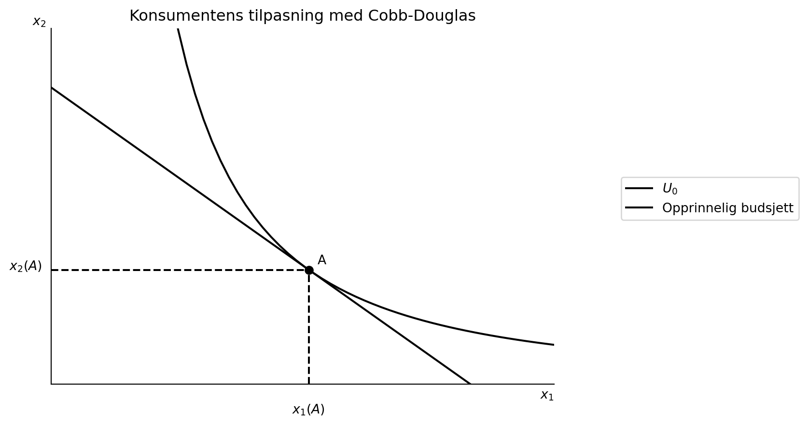
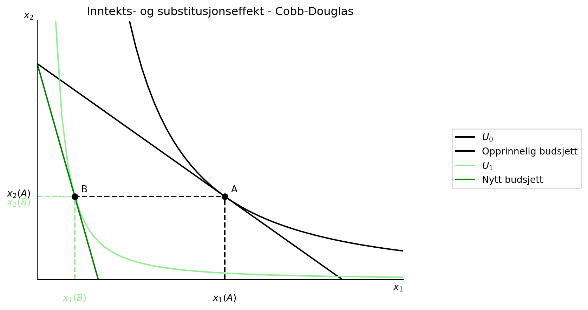
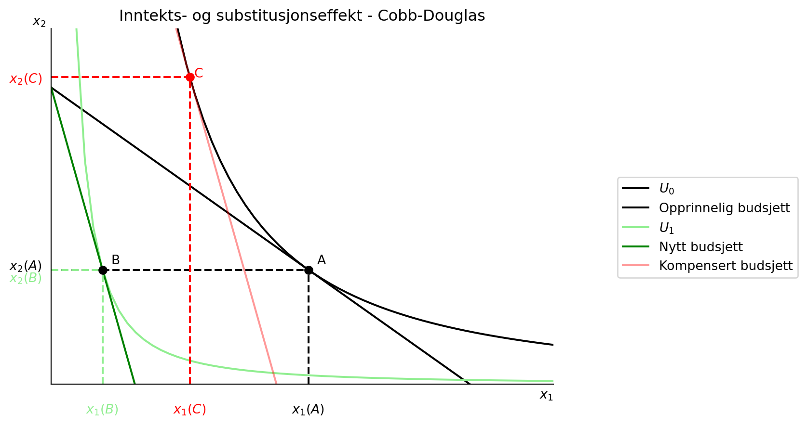

import numpy as np
from matplotlib import pyplot as plt
import sympy as spFor å gå tilbake til hovedsiden trykker du her.
Oppgave 9
- I eksempelet faller etterspørselen etter gode 2 når \(p_1\) øker. Dette betyr at den negative inntektseffekten er større enn den positive substitusjonseffekten. Dette viser seg å alltid være tilfelle i LES modellen med \(\gamma_i\) positiv for alle goder. Som Chang og Fawson (1994) skriver: “When the \(\gamma_i\) are positive, the cross price effects are negative, a fact implying that the income effects are stronger than the substitution effects”. Forklar.
En negativ krysspriseffekt betyr at en økning i prisen på gode 1 fører totalt i en reduksjon i etterspørsel etter gode 2. Dette vil si at godene er komplementære, og er alltid tilfellet i LES modellen når \(\gamma > 0\). Som vi har sett vil substitusjonseffekten være positiv for gode 2 siden gode 2 er blitt relativt billigere og etterspørres mer. Inntektseffekten av at gode 1 er blitt dyrere er negativ for begge godene. Gitt at den totale effekten på etterspørsel etter gode 2 er negativ som følge av en økning i prisen på 1 må det være slik at inntektseffekten alltid er størst. Etterspørsel etter begge goder reduseres når prisen på en av dem øker.
- I Stone-Geary formuleringen kan \(\gamma_i\) være negative tall. Hva er konsekvensen av dette for krysspriseffekten?
Krysspriselastisiteten 12 kan skrives som \(-\frac{\beta_i\gamma_2p_2}{p_1x_1}\) og med \(\gamma_2<0\) er krysspriselastisiteten positiv, og da er godene substitutter. En økning i prisen på gode 2 fører til en økning i etterspørsel etter gode 1.
- Tenk at konsumenten i det forrige eksempelet har en Cobb-Douglas nyttefunksjon \(U(x_1,x_2)=x_1^{.4}x_2^{.25}\). Hvordan ser inntekts- og substitusjonseffektene ut nå? Sammenlikn med Stone-Geary tilfellet.
# c)
def create_ax():
fig, ax = plt.subplots()
# ax.set_ylabel('$x_2$', loc='top', rotation=0)
ax.set_xlabel('$x_1$', loc='right')
ax.set(xlim=(0,100))
ax.set(ylim=(0,100))
ax.spines['top'].set_color('none')
ax.spines['right'].set_color('none')
return fig, ax
x=np.linspace(0.001,100, 100)
def budsjett(M, x_1, p_1, p_2):
return M/p_2 - (p_1*x_1/p_2)
# symboler
x_1, x_2, a, b, U_0 =sp.symbols("x_1 x_2 a b U_0", real=True, positive=True)
U=x_1**a*x_2**b
# vi må løse for x_2 og et gitt nyttenivå
x_2_ind_sol=sp.solve(U-U_0,x_2)[0]
# gjør om for å plotte
indiff_x_2=sp.lambdify( (U_0,a,b,x_1), x_2_ind_sol)
# nye symboler
p_1, p_2, m =sp.symbols("p_1 p_2 m", real=True, positive=True)
bud=p_1*x_1+p_2*x_2
# Beregne MSB
msb = sp.diff(U, x_1)/sp.diff(U,x_2)
display(msb)\(\displaystyle \frac{a x_{2}}{b x_{1}}\)
# Løs likning
x_2_rel=sp.solve(msb-p_1/p_2,x_2)[0]
display(x_2_rel)\(\displaystyle \frac{b p_{1} x_{1}}{a p_{2}}\)
# sett inn i m og løs for x_1
budsj=bud.subs(x_2,x_2_rel)
display(budsj)
x_1_eq= sp.solve(budsj-m,x_1)[0]
# dette er likevektsløsning for x_1
#sett inn i x_2_rel for å få x_2_eq
x_2_eq= x_2_rel.subs(x_1,x_1_eq)
display(x_1_eq)
display(x_2_eq)\(\displaystyle p_{1} x_{1} + \frac{b p_{1} x_{1}}{a}\)
\(\displaystyle \frac{a m}{p_{1} \left(a + b\right)}\)
\(\displaystyle \frac{b m}{p_{2} \left(a + b\right)}\)
# budsjettandeler
andel_x_1=p_1*x_1_eq/m
andel_x_2=p_2*x_2_eq/m
display(andel_x_1)
display(andel_x_2)\(\displaystyle \frac{a}{a + b}\)
\(\displaystyle \frac{b}{a + b}\)
# steg 1 har vi løst x_1_eq og x_2_eq
# steg 2
U_max=U.subs([(x_1,x_1_eq),(x_2,x_2_eq)])
display(U_max)\(\displaystyle \left(\frac{a m}{p_{1} \left(a + b\right)}\right)^{a} \left(\frac{b m}{p_{2} \left(a + b\right)}\right)^{b}\)
nytte = U_max.subs([(a,.4),(b,.25),(m,100),(p_1,2),(p_2,2)])
x_1_num = x_1_eq.subs([(a,.4),(b,.25),(m,100),(p_1,2),(p_2,2)])
x_2_num = x_2_eq.subs([(a,.4),(b,.25),(m,100),(p_1,2),(p_2,2)])
display(nytte)
display(x_1_num)
display(x_2_num)\(\displaystyle 8.24604726351964\)
\(\displaystyle 30.7692307692308\)
\(\displaystyle 19.2307692307692\)
# nå kan vi plotte
fig, ax=create_ax()
# plott funksjonene
ax.set_ylabel('$x_2$', loc='top', rotation=0)
ax.plot(x, indiff_x_2(nytte,.4,.25,x), label='$U_{0}$', color='black')
ax.plot(x, budsjett(100, x, 2, 2), label = 'Opprinnelig budsjett', color='black')
# tegn inn tilpasningen
ax.vlines(x_1_num,0,x_2_num, color='black',ls='dashed')
ax.hlines(x_2_num,0,x_1_num, color='black',ls='dashed')
ax.set(xlim=(0,60))
ax.set(ylim=(0,60))
# ta bort tall på aksene
ax.set_xticks([], [])
ax.set_yticks([], [])
ax.annotate('$x_1(A)$', (x_1_num-2, -5), annotation_clip=False)
ax.annotate('$x_2(A)$', (-5, x_2_num), annotation_clip=False)
ax.annotate('A', (x_1_num+1,x_2_num+1))
ax.plot(x_1_num, x_2_num , marker='o', color='black')
# tittel
ax.set_title('Konsumentens tilpasning med Cobb-Douglas')
#vis navnene:
ax.legend(bbox_to_anchor=(1.5,0.6));
nytte2 = U_max.subs([(a,.4),(b,.25),(m,100),(p_1,10),(p_2,2)])
x_1_num = x_1_eq.subs([(a,.4),(b,.25),(m,100),(p_1,10),(p_2,2)])
x_2_num = x_2_eq.subs([(a,.4),(b,.25),(m,100),(p_1,10),(p_2,2)])
display(nytte)
display(x_1_num)
display(x_2_num)\(\displaystyle 8.24604726351964\)
\(\displaystyle 6.15384615384615\)
\(\displaystyle 19.2307692307692\)
ax.plot(x, indiff_x_2(nytte2,.4,.25,x), label='$U_{1}$', color='lightgreen')
ax.plot(x, budsjett(100, x, 10, 2), label = 'Nytt budsjett', color='green')
ax.vlines(x_1_num,0,x_2_num, color='lightgreen',ls='dashed')
ax.hlines(x_2_num,0,x_1_num, color='lightgreen',ls='dashed')
ax.annotate('$x_1(B)$', (x_1_num-2, -5), annotation_clip=False, color='lightgreen')
ax.annotate('$x_2(B)$', (-5, x_2_num-2), annotation_clip=False, color='lightgreen')
ax.annotate('B', (x_1_num+1,x_2_num+1))
ax.plot(x_1_num, x_2_num , marker='o', color='black')
# tittel
ax.set_title('Inntekts- og substitusjonseffekt - Cobb-Douglas')
#vis navnene:
ax.legend(bbox_to_anchor=(1.5,0.6));
fig
# steg 3
# beregn fiktiv inntekt
# finn først hvordan oppnådd nytte er avhengig av inntekt gitt nye priser
V_m = U_max.subs([(a,.4),(b,.25),(p_1,10),(p_2,2)])
V_m\(\displaystyle 0.217098997475926 m^{0.65}\)
sp.solve(V_m-nytte, m)[0]\(\displaystyle 269.23739957801\)
x_1_eq_komp = float(x_1_eq.subs([(a, .4), (b, .25), (m, 269.24), (p_1, 10), (p_2, 2)]))
x_2_eq_komp = float(x_2_eq.subs([(a, .4), (b, .25), (m, 269.24), (p_1, 10), (p_2, 2)]))
ax.plot(x, budsjett(269.24, x, 10, 2), color='red', alpha=.4, label='Kompensert budsjett')
ax.vlines(x_1_eq_komp, 0, x_2_eq_komp, ls='dashed', color='red')
ax.hlines(x_2_eq_komp, 0, x_1_eq_komp, ls='dashed', color='red')
ax.annotate('$x_1(C)$', (x_1_eq_komp-2, -5), color='red', annotation_clip=False)
ax.annotate('$x_2(C)$', (-5, x_2_eq_komp-1), color= 'red', annotation_clip=False)
ax.annotate('C', (x_1_eq_komp+.5,x_2_eq_komp), color='red')
ax.plot(x_1_eq_komp, x_2_eq_komp , marker='o', color='red')
ax.legend(bbox_to_anchor=(1.5,0.6));
fig
For å gå tilbake til hovedsiden trykker du her.